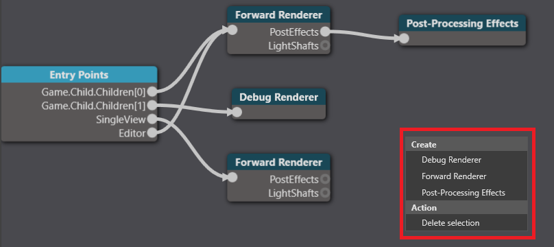

グラフィックス コンポジター
上級 プログラマー
Note
このページは、グラフィックスパイプラインの基本を理解できていることを前提としています。
グラフィックス コンポジターは、シーンのレンダリング方法について整理します。これを使って、レンダリングパイプラインのほぼすべての部分をカスタマイズすることができます。例えば、以下のようなことができます。
- 1つまたは複数のカメラの使用
- エンティティのフィルタリング
- 異なるビューポートを持つ1つ以上のレンダー テクスチャへのレンダリング
- HDR または LDR レンダリングの設定
- カメラのレンダリングの前後にレンダーターゲットへ適用するポストエフェクト
- レンダーターゲットのクリア、または深度バッファのみのクリア（例：FPS ゲームで常にレンダーターゲットの最前面にレンダリングしたり、UI をレンダリングしたりする場合など）
- スクリプト（または任意のアニメーションシステム）からのコンポジターの変更（例：ポストエフェクトの変更）
グラフィックスコンポジターを作成する
Stride では、プロジェクトを新規作成するときに、グラフィックスコンポジターが含まれます。
別のグラフィックスコンポジターを作成する必要がある場合は、アセットビューで [Add asset] をクリックし、[Miscellaneous] > [Graphics compositor] を選択します。

2つのプリセットのうちの1つを選ぶことができます。
- Level 10（ポストエフェクトで HDR を使用）
- Level 9（ポストエフェクトを使わない LDR を使用）
グラフィックスコンポジターを設定する
プロジェクトは複数のグラフィックスコンポジターを持つことができますが、同時に使用できるコンポジターは1つだけです。実行時には、ゲームの設定で指定したグラフィックスコンポジターを使用します。

実行時に、グラフィックスコンポジターをスクリプトで変更することもできます。
グラフィックスコンポジターエディターを開く
グラフィックスコンポジターのカスタマイズは、グラフィックスコンポジターエディターで行います。
Note
グラフィックスコンポジターエディターは、実験的な機能です。
アセットビューで、Graphics Compositor アセットをダブルクリックします。

グラフィックスコンポジターエディター が開きます。

ノード
グラフィックスコンポジターエディターは、ノードに分かれています。プロパティグリッドで、各ノードのプロパティを設定することができます。
エンティティポイント
Entry Points ノードで、各エントリポイントのパイプラインを設定することができます。

3つのエントリーポイントがあります。
- ゲームをレンダリングするための "Game"
- Game Studio エディターをレンダリングするための "Editor"
- ライト プローブやキューブマップなどその他のものをレンダリングするための "SingleView"（プロパティグリッドでは Utility と表記）
各エントリーポイントには別々のレンダリングパイプラインを使用できます。例えば、Game と Editor では同じフォワードレンダラーとポスト エフェクトを共有し、SingleView では別のフォワードレンダラーを使用する、といった具合です。
エントリーポイントをレンダラーに接続する
Entry points ノードを選択します。
プロパティグリッドで、接続したいエントリポイント（Editor, Game, Utility）の横に、接続先のレンダラーを指定します。

各レンダラーの情報については、シーン レンダラーをご覧ください。
フォワードレンダラー
一般的な設定では、フォワードレンダラーがシーンのほぼすべてをレンダリングします。このレンダーは、次の順序でレンダリングしていきます。
- 不透明オブジェクト
- 透明オブジェクト
- ポスト エフェクト
フォワードレンダラーは、バーチャル リアリティーのオプションを設定する場所でもあります。フォワードレンダラーのプロパティは、Forward renderer ノードで設定します。
デバッグレンダラー
デバッグレンダラーは、スクリプトがデバッグ情報を表示する際に使用します。詳細については、デバッグ レンダラーを参照してください。
ポストプロセスエフェクト
Post-processing effects ノードは、フォワードレンダラーの後ろについて、ゲームのポストエフェクトを制御します。詳細についてはポストエフェクトを参照してください。
ノードを作成する
ノードを作成するには、グラフィックスコンポジターエディターを右クリックして、作成するノードの種類を選択します。
